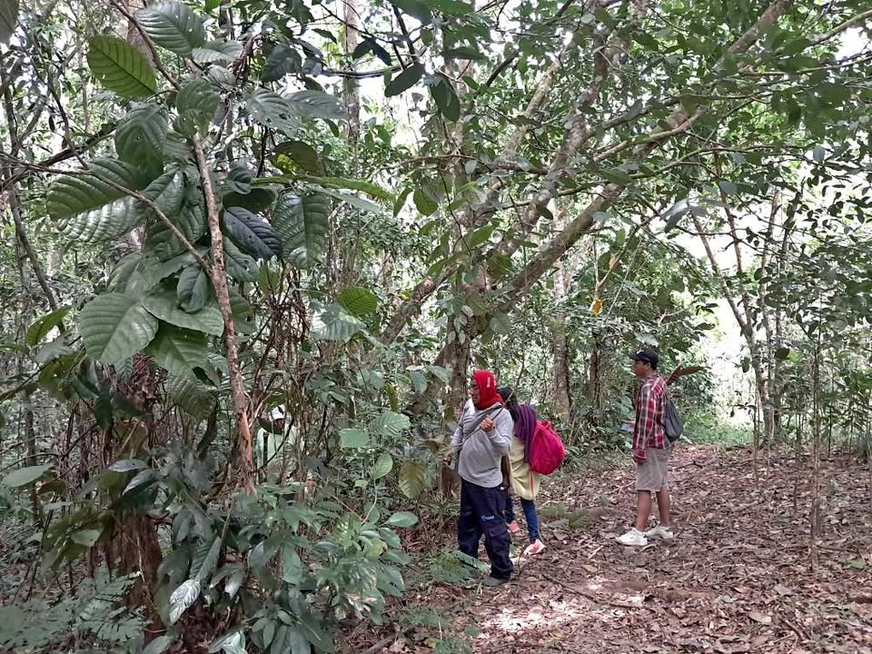

Precio desconocido 1.5 ha

"¡OPORTUNIDAD ÚNICA! Venta de terreno, en San Roque de Cumbaza, a 30 minutos de Tarapoto. 1.5 hectáreas de pura naturaleza con vista panorámica impresionante. Ubicado en zona de montaña, CON PROYECCION DE CARRETERA, a solo 20 minutos de donde termina la carretera actual. El terreno cuenta con una quebrada de agua natural, ideal para disfrutar de la tranquilidad y belleza del entorno. Perfecto para inversión, ¡NO TE PIERDAS ESTA OPORTUNIDAD DE VIVIR EN UN PARAÍSO NATURAL! contactanos al 📞 [hidden information]"